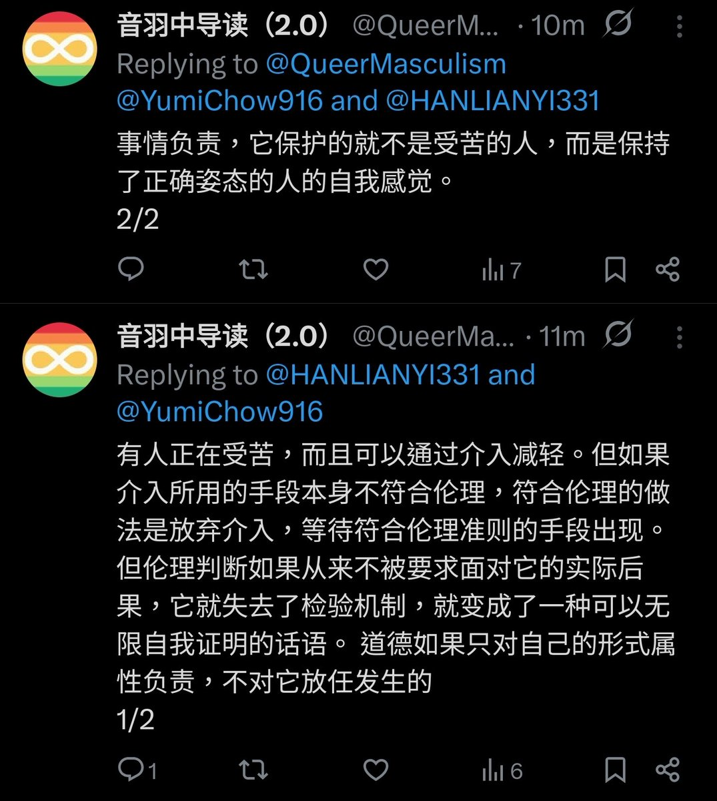

https://t.co/nukwOdorlQ
如果“会产生额外伤害就不应该介入”，第一时间先关停的应该是全球所有的精神科医院住院部。
在帕累托法则、艾森豪威尔矩阵的情况下，在高不确定性、高情绪负载的助人场景里，把“不出任何错误”当作首要目标，会把成本推到不可持续的程度。现实中，任何真实行动都会产生副作用，这是熵增定律的体现，不是“道德不够高尚”的问题。
纯德ontology（原则优先）在抽象讨论里听起来高尚，但在“拉不拉杆都会死人”的现场，只会变成“不拉杆的人眼睁睁看着更多人死去，却觉得自己干净”。这不是道德相对主义，而是结果主义在高 stakes 环境下的必然选择。历史上无数次人道主义灾难（战争、灾荒、公共卫生危机）都证明：只求“自己不犯错”往往等于间接害人。
“做的不完美就不要做”→ 最终没人做事：这是真实发生的动态。“大量付出者因被指责不完美而退出”，在全球志愿/公益/互助社群里都反复上演（effective altruism 圈子里也反复讨论过“purity spiral”——纯洁性螺旋，导致行动力内耗至零）。
只有骗子能“完美”：真正做实事的人必须不断妥协、试错、迭代；而骗子只需要“表演完美”——包装故事、零差评、永远正确，就能在信息不对称的社群里收割信任。
在扭曲、资源匮乏、情绪高涨的助人环境中，“不拉拉杆”的洁癖，客观上就是在用别人的命换自己的道德洁净感。而真正有效的人，必须学会在“次优解”和“可接受的副作用”之间反复权衡，同时保持自我修正能力。
这不是“效益至上”的冷血功利主义，而是把有限精力真正用在救人而不是表演正确的现实主义。
只停留在“正确的废话”里。
把主要矛盾和次要矛盾分清楚、敢做事、敢承担副作用，真正需要帮助的人才会少受点罪。
只会喊“做的不完美就别做”的人，历史会证明：他们最后只会剩下完美无缺的空话，和一个空荡荡、没人敢再伸手的社群。


如果“会产生额外伤害就不应该介入”，第一时间先关停的应该是全球所有的精神科医院住院部。
在帕累托法则、艾森豪威尔矩阵的情况下，在高不确定性、高情绪负载的助人场景里，把“不出任何错误”当作首要目标，会把成本推到不可持续的程度。现实中，任何真实行动都会产生副作用，这是熵增定律的体现，不是“道德不够高尚”的问题。
纯德ontology（原则优先）在抽象讨论里听起来高尚，但在“拉不拉杆都会死人”的现场，只会变成“不拉杆的人眼睁睁看着更多人死去，却觉得自己干净”。这不是道德相对主义，而是结果主义在高 stakes 环境下的必然选择。历史上无数次人道主义灾难（战争、灾荒、公共卫生危机）都证明：只求“自己不犯错”往往等于间接害人。
“做的不完美就不要做”→ 最终没人做事：这是真实发生的动态。“大量付出者因被指责不完美而退出”，在全球志愿/公益/互助社群里都反复上演（effective altruism 圈子里也反复讨论过“purity spiral”——纯洁性螺旋，导致行动力内耗至零）。
只有骗子能“完美”：真正做实事的人必须不断妥协、试错、迭代；而骗子只需要“表演完美”——包装故事、零差评、永远正确，就能在信息不对称的社群里收割信任。
在扭曲、资源匮乏、情绪高涨的助人环境中，“不拉拉杆”的洁癖，客观上就是在用别人的命换自己的道德洁净感。而真正有效的人，必须学会在“次优解”和“可接受的副作用”之间反复权衡，同时保持自我修正能力。
这不是“效益至上”的冷血功利主义，而是把有限精力真正用在救人而不是表演正确的现实主义。
只停留在“正确的废话”里。
把主要矛盾和次要矛盾分清楚、敢做事、敢承担副作用，真正需要帮助的人才会少受点罪。
只会喊“做的不完美就别做”的人，历史会证明：他们最后只会剩下完美无缺的空话，和一个空荡荡、没人敢再伸手的社群。

一个人的精力是有限的，把每一件事情都做的完美且滴水不漏，同时又效率极高，永远是一种不切实际的空想。
因此如果想要真的做某一件实事，分清每一件事情的主要矛盾和次要矛盾，永远是必备的技能。 https://t.co/KsEes5H8Q0
因此如果想要真的做某一件实事，分清每一件事情的主要矛盾和次要矛盾，永远是必备的技能。 https://t.co/KsEes5H8Q0
如果指向的是介入的同時產生了新的傷害，這種情況下是不能功過相抵的，不然人口販運就不是犯罪，而是成了對脆弱人群提供住房和飲食的救助了
傷害與傷害之間是不能比較大小的，不然就不會有電車難題了，更不用說如果這個新傷害是介入者主動造成的，那就成了我替你解決了一個傷害，所以我就有資格加害你 https://t.co/iGTbOWi4AT
傷害與傷害之間是不能比較大小的，不然就不會有電車難題了，更不用說如果這個新傷害是介入者主動造成的，那就成了我替你解決了一個傷害，所以我就有資格加害你 https://t.co/iGTbOWi4AT